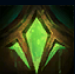
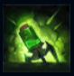
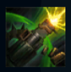
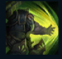
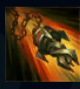

Urgot
| Urgot The Dreadnought | |
|---|---|
| Release date | 24.08.2010 |
| Class | Juggernaut |
| Positions | Top |
| Resource | Mana |
| Range type | Ranged |
| Adaptive type | Physical |
| Base statistics | |||
| Health | 585 – 2081 | Mana | 340 – 1105 |
| Health regen. | 7.5 – 19.4 |
Mana regen. | 7.25 – 20.85 |
| Armor | 36 – 108.25 | Attack damage | 63 – 131 |
| Magic resist. | 32 – 53.25 | Crit. damage | 175% |
| Move. speed | 330 | Attack range | 350 |
Urgot, fostul călău al Noxusului, a fost trădat chiar de imperiul în numele căruia ucisese atât de mulți oameni. Încătușat în lanțuri grele de fier, a fost forțat să învețe ce înseamnă cu adevărat puterea când a ajuns în Extracție, o mină-închisoare din adâncurile Zaunului. După un dezastru care a semănat haos în tot orașul, Urgot a evadat, iar umbra lui impunătoare s-a așternut asupra lumii interlope a orașului. Chinuindu-și victimele chiar cu lanțurile cu care l-au ținut prizonier, vrea să-i elimine din noul său cămin pe cei ce nu sunt vrednici, transformând abisurile într-un altar al durerii. |  |
ECOUL FLĂCĂRILOR Când Urgot folosește atacurile de bază sau ''Epurarea'', din picioarele lui ies flăcări ce provoacă daune fizice. |
||
|---|---|---|---|---|
 |
ȘARJĂ COROZIVĂ Lansează o încărcătură explozivă către locația-țintă, provocându-le daune fizice inamicilor loviți și încetinindu-i. |
|||
 |
EPURARE Urgot se mișcă mai lent în timp ce-și descarcă arma asupra inamicilor din apropiere. Abilitatea îi țintește prioritar pe campionii inamici loviți recent de Urgot cu alte vrăji și declanșează ''Ecoul flăcărilor''. |
|||
|  |
DISPREȚ Urgot se năpustește într-o direcție, se protejează cu un scut și calcă în picioare toate unitățile inamice cu excepția campionilor. Dacă se ciocnește de un campion inamic, se oprește și îl aruncă la o parte. |
|||
 |
DINCOLO DE MOARTE Urgot lansează un chim-burghiu care înjunghie primul campion lovit. Dacă viața adversarului scade sub un anumit prag, Urgot decide că acesta este prea slab pentru a trăi și îl poate executa. |